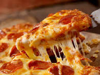

Pizza

Pizza is a beloved and iconic dish that originated in Italy but has become a global favorite. It consists of a round, flat dough base topped with tomato sauce, cheese, and various toppings, then baked in a hot oven until the crust is crispy and the cheese is melted and bubbly.
Ingredients
- Pizza dough (store-bought or homemade)
- Pizza sauce or marinara sauce
- Shredded mozzarella cheese
- Shredded mozzarella cheese
- Toppings of your choice, such as:Pepperoni,Sausage,Mushrooms,Bell peppers,Onions,Olives,Pineapple,Ham
,Fresh basil,Cherry tomatoes,Spinach,Artichokes,Feta cheese,Parmesan cheese
Steps needed for making the dish.
- Preheat your oven to the appropriate temperature (usually around 450°F or 230°C).
- Roll out your pizza dough on a floured surface to your desired thickness and shape. You can use store-bought dough or make your own from scratch.
- Place the rolled-out dough on a baking sheet or pizza stone that has been lightly dusted with cornmeal to prevent sticking.
- Spread pizza sauce or marinara sauce evenly over the dough, leaving a small border around the edges for the crust.
- Sprinkle shredded mozzarella cheese over the sauce, covering the entire surface of the pizza.
- Add your desired toppings, such as pepperoni, sausage, vegetables, or any other ingredients you like.
- Bake the pizza in the preheated oven for about 12-15 minutes, or until the crust is golden brown and the cheese is melted and bubbly.
- Remove the pizza from the oven and let it cool for a few minutes before slicing and serving.
- Optionally, you can garnish the pizza with fresh basil, a drizzle of olive oil, or a sprinkle of grated Parmesan cheese before serving.